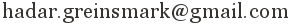

Hi, I'm a computer engineer interested in distributed systems, virtualization and databases. I took my Bachelor's and Master's at KTH Royal Institute of Technology in Stockholm, with half of my Master's being made at the University of Washington in Seattle. As of 2019, I am working as a Software Engineer at Exasol in Berlin. We're making large-scale data analytics run even faster in our database. Check out the docs here if you're interested.
You can also have a look at my blog on this page. I'm also present on Github, Twitter and Linkedin.

+46 72-025 48 10
More contact info →